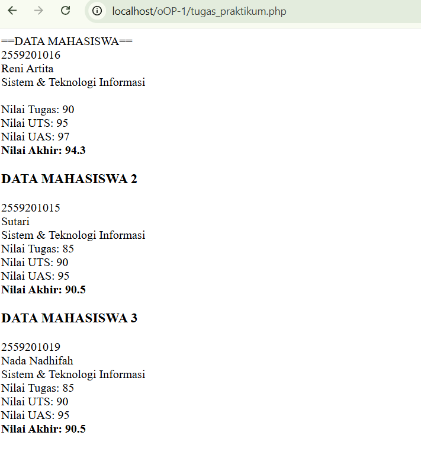
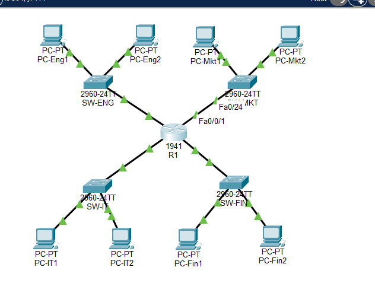

Data Mahasiswa
Program sederhana untuk mengelola data mahasiswa menggunakan bahasa pemrograman PHP
Halo, saya
Mahasiswa Sistem dan Teknologi Informasi yang tertarik pada pemrograman, desain website, dan pengembangan aplikasi.
Lihat Proyek Saya
Saya mahasiswa semester 3 di Universitas Pertiba. Saya senang mempelajari hal baru, terutama yang berhubungan dengan teknologi, dan sedang belajar membangun website dengan HTML, CSS, dan JavaScript. Halaman ini berisi profil dan kumpulan karya yang pernah saya kerjakan.

Program sederhana untuk mengelola data mahasiswa menggunakan bahasa pemrograman PHP

Website profil multihalaman yang dibuat dengan HTML dan CSS murni.

Praktikum topologi star dan subnetting VLSM di Packet Tracer.